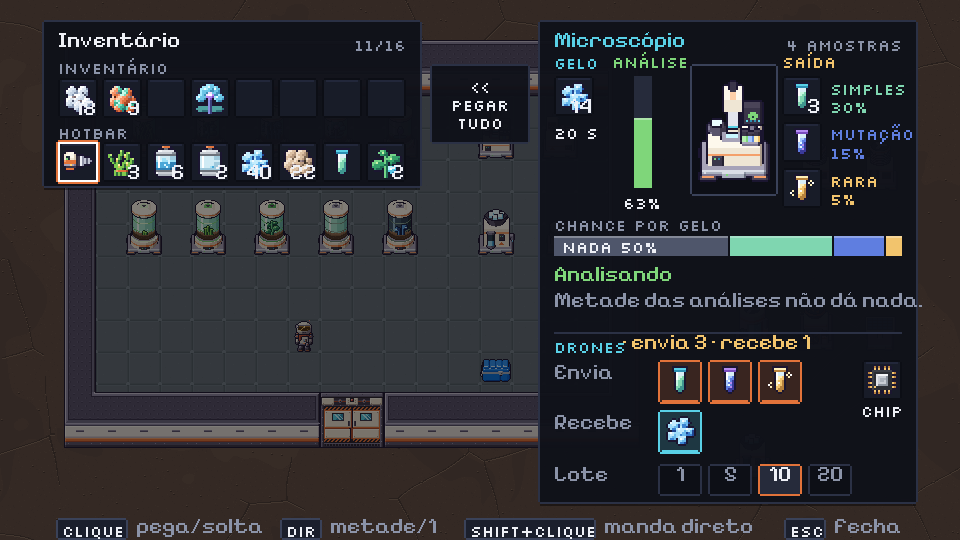
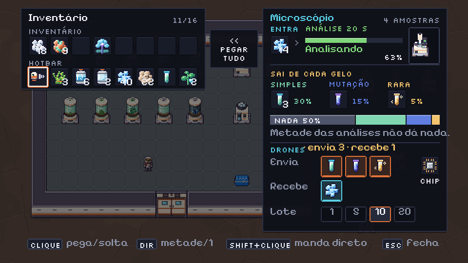
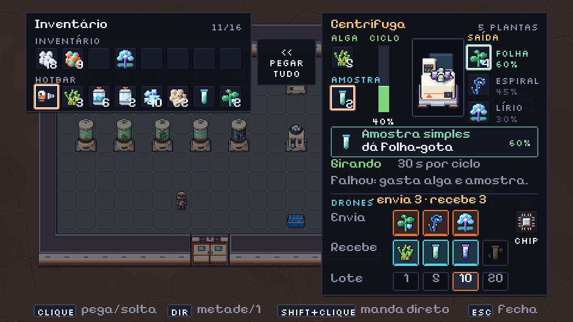
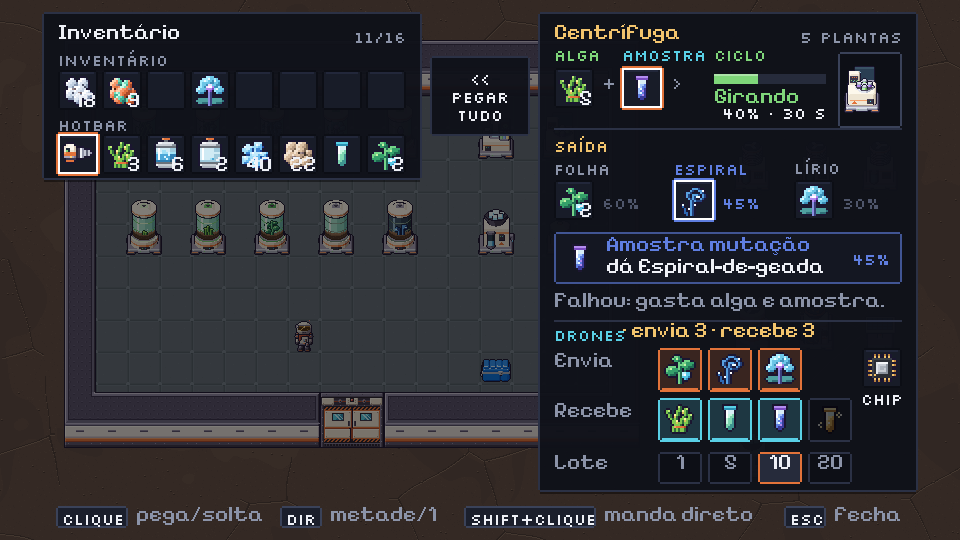

game/ui.py (painel 190 de largura, slot 20, botão de drone 22, seção DRONES com Envia / Recebe / Lote e o slot do CHIP). Cada mock está no estado "trabalhando", com itens nos slots. Referência de estilo: só o próprio padrão dos painéis do jogo; nada copiado de fora.Entrada: 1 slot de gelo. Trabalho: barra da análise (20 s por gelo). Saída: 3 slots fixos (SIMPLES 30%, MUTAÇÃO 15%, RARA 5%) e uma faixa de chances com NADA 50% em cinza, pra ficar claro que metade das análises não dá nada.


Entradas: ALGA e AMOSTRA (qualquer uma das 3). Trabalho: barra do ciclo (30 s). Saída: 3 slots fixos (FOLHA, ESPIRAL, LÍRIO). Um cartão de resultado diz qual planta e qual chance a amostra do slot dá, e só a planta daquela amostra fica acesa nas saídas (as outras ficam apagadas com a chance delas). O texto "Falhou: gasta alga e amostra." avisa do custo.


| A (máquina no meio) | B (fluxo compacto) | |
|---|---|---|
| Leitura | Entradas à esquerda, máquina ampliada ×2 no centro, saídas empilhadas à direita com nome e chance ao lado. Barra de progresso vertical (igual CRESCE do Cultivador). | Linha de cima é o fluxo entrada → barra horizontal → máquina em miniatura (×1). Embaixo, as 3 saídas em colunas com o nome em cima e a chance ao lado. |
| Altura | Mais alta (parte de cima com 66 de altura pela máquina grande) | Mais baixa no microscópio; na centrífuga fica parecida por causa do cartão de resultado |
| Máquina | Ganha destaque, com a mesma moldura do Cultivador (família visual) | Vira um selo pequeno; o foco é o fluxo e os números |
| Chances | Pilha vertical: leitura rápida de cima pra baixo | Em fileira: dá pra comparar as três de relance |
Microscópio e Centrífuga animados (tiras de 4 quadros, aqui a 10 fps, ×4). Vêm de v08_plantas/pendentes/anim/.
_cultivator_panel: janela SIDE_W (190) à direita, inventário à esquerda, "<< PEGAR TUDO" no meio (SIDE_MID), linha de ajuda embaixo. Título colorido: Microscópio em ciano (C_O2), Centrífuga em dourado; texto à direita ("4 AMOSTRAS", "5 PLANTAS") = soma das saídas.y, gx = cx + 8): rótulos em y+17, slots em y+28; coluna de entrada em gx; barra vertical em gx+40 (9×56, rótulo "ANÁLISE" ou "CICLO"); cartão da máquina em gx+68 (44×66, y+22) com o sprite 40×56 ampliado ×2 nativo (mesmo esquema do cultivator_art); saída em gx+114, passo 23 (slot + 2 linhas de texto em x+24).y+108: NADA 50 / SIMPLES 30 / MUTAÇÃO 15 / RARA 5, cores #4f566b, #7fd6b0, #5f7ee0, #f2c46d (as cores dominantes dos ícones das amostras).y+96, borda na cor da amostra; linha 1 "Amostra simples/mutação/rara", linha 2 "dá Folha-gota / Espiral-de-geada / Lírio-de-Ilves", chance à direita (60% / 45% / 30%). Sem amostra no slot: esconder o cartão e mostrar as 3 chances apagadas. A planta acesa (borda na cor da amostra, texto na cor) é só a da amostra atual.#7fd67a) quando trabalhando, C_ALERT quando parado (Sem gelo, Sem alga, Sem amostra, Saída cheia).draw_logistics a partir de y+156 (A do microscópio) / y+152 (A da centrífuga): Microscópio recebe gelo e envia as 3 amostras; Centrífuga recebe alga + 3 amostras e envia as 3 plantas (4 botões em Recebe cabem com o chip graças ao logi_row_cap). Chip no canto direito.LOGI_Y + 82 + 10, com LOGI_Y 156 e 152), parecido com o Cultivador (244). Cabe nos 270 de altura lógica.icon_ice, icon_algae, icon_sample_basic/mutant/rare, icon_plant_1/2/3, icon_chip. Nenhum sprite novo.Gerado por tools/sprites/v08_m4_paineis.py (determinístico).